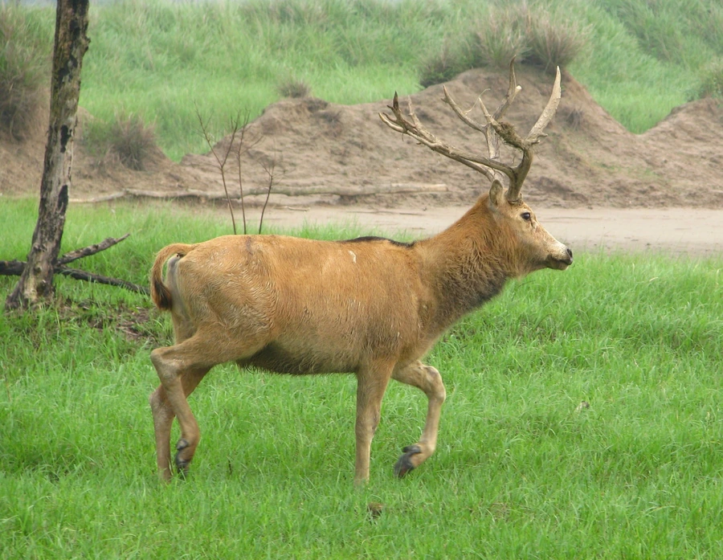

哺乳动物 · 动物界
麋鹿 Elaphurus davidianus

中国特有的鹿类，角似鹿、脸似马、蹄似牛、尾似驴，被称为“四不像”，曾野外灭绝后成功重引入。
- 分类
- 门脊索动物门纲哺乳纲目偶蹄目科鹿科属麋鹿属
- 栖息环境
- 长江中下游的沼泽湿地与河漫滩草地，善游泳
- 地理分布
- 原产于中国长江中下游，现为北京、江苏、湖北等地的重引入种群
- 保护级别
- IUCN 野外灭绝（EW）；中国国家一级保护动物
物种志
麋鹿体长 1.5–2.0 米，肩高 1.1–1.3 米，体重 120–250 kg。它的外形奇特：角分叉但主干较平，形状似鹿；脸长似马；蹄宽大似牛；尾巴长而末端有簇毛，似驴。因此被称为“四不像”。冬季毛色为灰褐色，夏季转为红棕色。
麋鹿是中国特有物种，历史上分布于长江中下游的沼泽湿地，19 世纪末因栖息地破坏和猎捕在野外灭绝，最后一群保存在英国乌邦寺。1985 年起，中国从英国重新引入麋鹿，在北京南海子、江苏大丰、湖北石首等地建立种群，并进行野化放归。麋鹿善游泳，喜食水生植物和嫩草，夏季常泡在水中避暑；发情期雄鹿会用角挑起水草装饰自己。雌兽妊娠期约 9 个月，每胎 1 仔。目前全球麋鹿种群约 1 万只，全部源自人工繁育，被列为野外灭绝（EW）。
形态与习性
- 食性水生植物、嫩草与树叶
- 体长1.5–2.0 m，肩高 1.1–1.3 m
- 体重120–250 kg
- 寿命约 20 年
- 繁殖妊娠期约 9 个月，每胎 1 仔
- 外形角似鹿、脸似马、蹄似牛、尾似驴
- 重引入1985 年起从英国重新引入中国
趣味知识
- 麋鹿因角似鹿、脸似马、蹄似牛、尾似驴而被称为“四不像”。
- 它曾在野外灭绝，1985 年起中国从英国重新引入并野化。
- 麋鹿善于游泳，夏季常泡在水中避暑。
- 发情期的雄鹿会用角挑起水草装饰自己以吸引雌鹿。